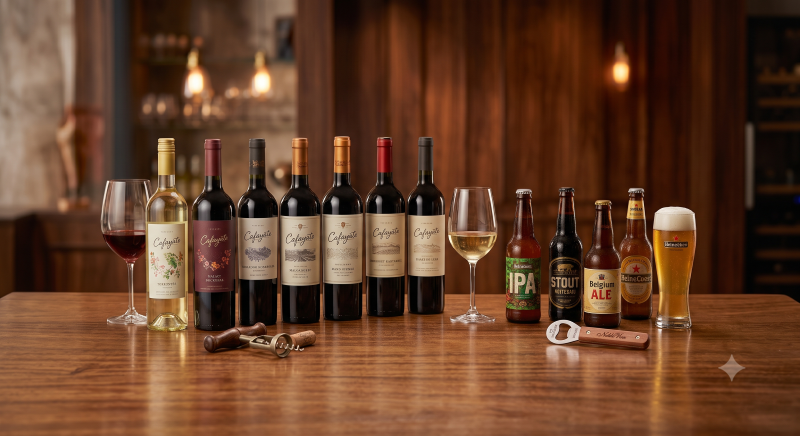

Nuestro Catálogo
Navegá por nuestras categorías y encontrá una amplia variedad de opciones para todos los gustos y presupuestos.
- 🍷 VINOS Tintos robustos, blancos frescos, rosados sutiles y espumantes para celebrar. Contamos con etiquetas de las bodegas más reconocidas y de vinos boutique para que descubras nuevos sabores.
- 🍺 CERVEZAS Las rubias, rojas y negras que ya conocés, junto con una excelente selección de cervezas artesanales (IPA, APA, Stout y más) para los paladares más exigentes.
- 🍹 APERITIVOS Y DESTILADOS Fernet, vermut, gin, vodka y todo lo necesario para que te conviertas en el bartender de tu propia casa
- 🥤 GASEOSAS Y SNACKS El complemento ideal. Refrescos, aguas tónicas, jugos y todo tipo de aperitivos salados para acompañar tu bebida favorita.
